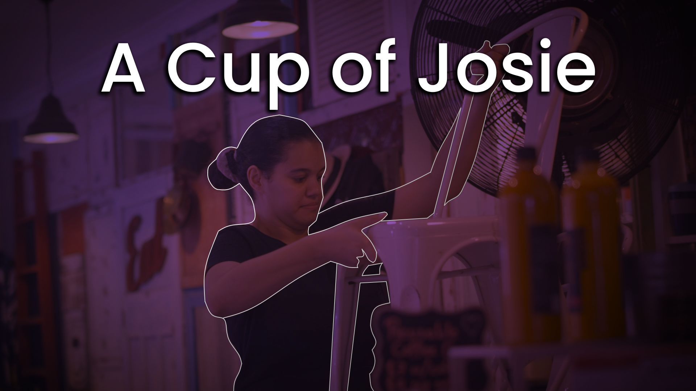
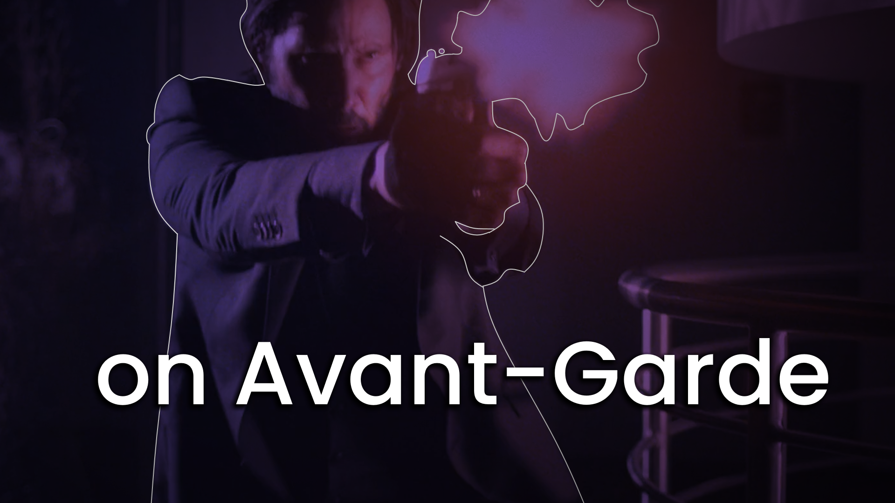

Portfolio
Here are some of the video projects I had a hand in, primarily in a post-production role.
Side note: due to my limited experience in HTML/CSS, I can't embed YouTube links and have them appear consistently across desktop and mobile platforms. Click on the thumbnails to be taken to the video on YouTube.

A Cup of Josie (2020), directed by Hayden Huynh.
A mini-documentary about Josephine "Josie" Casey, focusing on a "day in the life" of an apprentice chef, and the various
themes of inclusivity and diversity within the hospitality industry.
On this production I worked as the Director of Photography, as well as the motion graphics animator,
focusing on the lower-thirds and the animated intro sequence. No templates were used.
A Cup of Josie is currently an open entrant for the
Focus on Ability film festival.

Video Essay / Avant Garde Filmmaking (2019), directed by Adrian Roas.
In this video essay, my colleague Jack and I explore what avant-garde filmmaking is and how it affects the commercial
standard method of filmmaking. I'll admit, it's a bit of a fluff piece, but it's one I certainly enjoyed creating. Skip to 2:55 for my part.